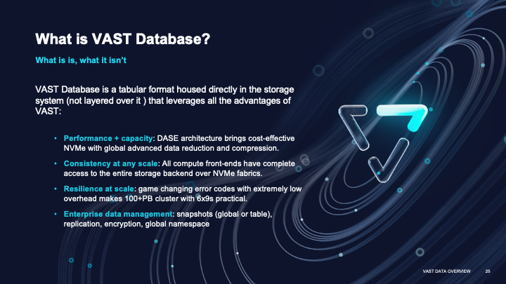
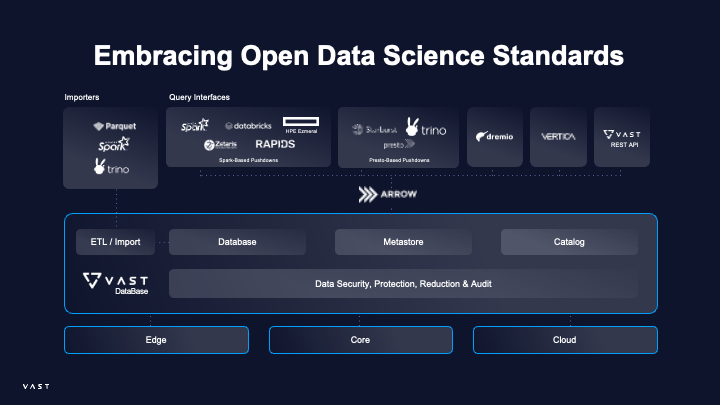

Introduction#
What is VAST DB?#
The VAST DataBase has broken fundamental database tradeoffs to combine the transactional performance of a database, the query performance of an exabyte-scalable data warehouse at the cost of a data lake.
VAST systems leverage deep write buffers built from low-cost persistent memory, this allows for every ACID transaction to be stored instantaneously.
As tables fill, they are then migrated down to low-cost hyperscale flash and stored in a columnar format, so that queries also run instantaneously.
Queries cut across both the long-term datastore and the write buffer, and even though data accessed in the buffer is row-based, the underlying persistent memory structures make any row reads lightning fast.

For what is it used?#
VAST DataBase is intended to solve large-scale data analysis problems where scale can be adjusted almost arbitrarily both horizontally and vertically.
Data lake scale with full low-latency transactional capabilities: VAST Database scales like a data lake while providing the low-latency transactional capabilities typically found in transactional databases.
Data warehouse-like performance: VAST delivers high-performance, analytical capabilities akin to a data warehouse, even on large datasets.
Efficient filtering on large datasets: The system is optimized for filtering and querying vast amounts of data, enabling fast access to relevant information.
Simplicity: No need for sharding, high availability (HA) is built into the system, and there’s no need to manage immutable objects.
Content Recommendation By enabling real-time queries all the way down to the archive, the VAST Database enables content producers, e-commerce sites and social networks to query user interest profiles and to real-time and train new ML models.
Payment Fraud Analytics The VAST DataBase transforms fraud analytics by combining the transactional performance of a database with the scalable query performance of a data lake. By breaking the tradeoffs between a database and a data warehouse, the VAST DataBase enables payments providers to analyze and detect fraud in real time.
Targeted Advertising The VAST DataBase is used by leading advertisers and advertising networks to develop more targeted advertising techniques by mapping and correlating user behavior. VAST’s efficiency algorithms create all-flash data lakes with archive economics, ideal for optimizing ad network P&L.
Homeland Security The VAST DataBase brings the ability to perform fine-grained queries all the way down to the archive. The platform is ideal for government agencies who struggle to find needles in haystacks… now, these needles can be found in real-time at exabyte-scale.
High Level Architecture Overview#
VAST DB Ecosystem Overview
)
Trino, Spark and Dremio are distributed query engine and the “compute” part of our database. VAST provides database connectors for the different query engines. Trino and Dremio are federated query engines with support for multiple Data sources like RDBMS, NOSQL Databases, Data Warehouses, Data Lakes and allows Data Consumers to execute queries and join data from multiple data source together. Data Consumers are typically Data Engineers, Data Scientists and Data Analysts. They are connecting to a Query engine from multiple Client applications like Data transformation tools (dbt), BI Visualization tools like Tableau, Superset, Power BI … or Notebooks like Jupyter or Querybook.
Apache Spark provides some additional functionality like Data Streaming, ETL, Adhoc Analytics and Machine Learning Libraries.
VAST Python SDK The Vast Python SDK leverages the VAST REST API directly to access the Database via pyarrow. The API can be used to Ingest, Update, Delete, Import, Query & Filter Data. This way Data Engineers or Data Scientist can programatically interact with the Database.
VAST Data Platform The VAST Data Platform offers a high performance flash based Datastore for unstructured data and a Database to store structured data. The VAST DASE Architecture excels in scalability, performance, and flexibility, providing cost-effective solutions for data analytics. It also ensures data management, protection, and adaptability to various use cases.
VAST Datastore The VAST Datastore is often used for Big data Analytics as the unstructured data repository of a data lake. It provides open File & Object interfaces like S3,NFS,SMB that will provide Data and ML Engineers and easy way to ingest and access to the same data. Big Data Analytics tools will operate mainly on S3 Data, however the same Data is accessilbe through NFS (File based) which is the preferred access method for AI & ML Frameworks. In a Bigdata context the VAST data store can act as the Landing - Staging area to store all the RAW data before they get structured in the VAST Database. Apache Spark or Trino are tools that are often used for these kind of ETL - data wrangling tasks.
VAST Database The VAST Database provides Data Warehouse functionality and a very fast access to structured data. VAST DB supports multiple distributed query engines like Spark, Trino and Dremio to submit queries from BI, Notebooks and other tools.
VAST provides a Trino connector to make the VAST DB available as a data source that support ACID transactions and performance improvements using Push downs.
A connector adapts Trino to a data source such as Hive/S3 for the (VAST Datastore) or to a Warehouse like the VAST Database. You can think of a connector the same way you think of a driver for a database. It is an implementation of Trino’s SPI, which allows Trino to interact with a resource using a standard API.
VAST Catalog The VAST Catalog is leveraging the VAST Database to automatically index all the file and object metadata within the VAST Datastore. Customers can add user based tags to objects that will also be available in the VAST Catalog. The VAST catalog can be connected to Trino and users can query all Metadata on the VAST Datastore.